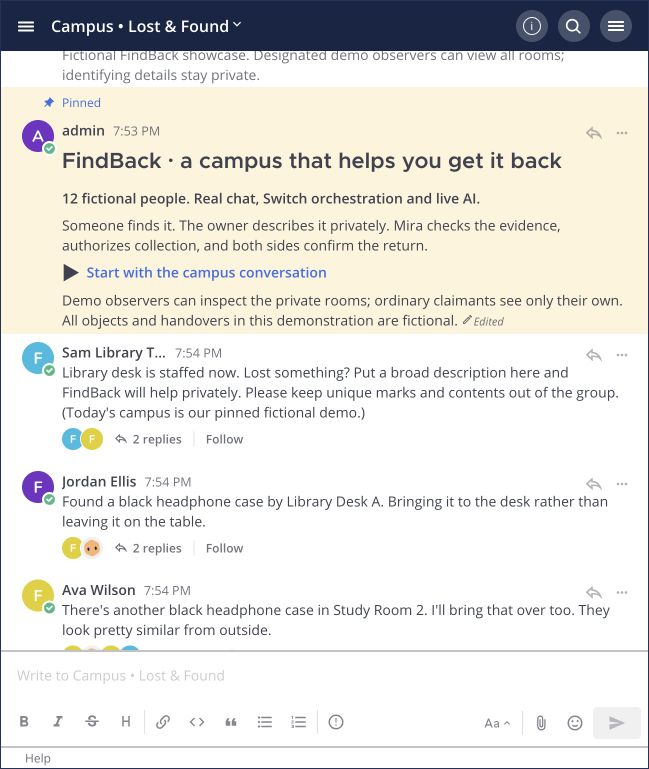

A CAMPUS LOST & FOUND, WITH A LITTLE HELP
Lost something?
Start a conversation.
Your headphones. Your water bottle. The book with all your notes. FindBack helps a campus community work out what belongs to whom—and get it back with care.

Two similar cases.
One detail makes the difference.
THE MOMENT WE BUILT FOR
“I think that might be mine.”
A black headphone case arrives at the library. Two students recognize it. The outside looks the same. The identifying detail is inside—and sharing it with the whole group would give away the answer.
FindBack takes that next conversation somewhere private, and gives the librarian something clear to review.
A LITTLE COORDINATION GOES A LONG WAY
From “maybe mine”
to ready for collection.
- 01CLAIMANT + INTAKE
Keep the details private.
The Intake agent helps the claimant describe their loss in a private conversation. Distinguishing marks and contents stay out of the campus group.
- 02MATCHER + LIBRARIAN
Give the librarian a clear picture.
The Matcher agent compares the evidence, noting agreements, contradictions, and missing information. A possible match stays a possibility until a person reviews it.
- 03HUMAN APPROVAL
Make the return count.
The librarian approves the specific claim and shares collection instructions privately. A completed return needs both a staff handover record and the claimant’s receipt.
SEE THE ACTUAL WORKFLOW
A campus story,
in under three minutes.
Follow a found headphone case from the public conversation into Alex’s private claim, Mira’s review, and approved collection.
This recorded walkthrough uses real Mattermost screens, Switch messages, and live AI calls. The participants and items are fictional. Screenshots are edited with cuts and holds, with synthetic English narration. The featured case ends at reserved collection, before handover and receipt.
Download the demoOPEN CODE. CLEAR BOUNDARIES.
The agents help.
People make the decision.
Two Codex-powered roles work through scoped Switch identities. Python and SQLite keep the case record, check who can act, and bind approval to the reviewed evidence. Mattermost is the conversation.
Run it locally